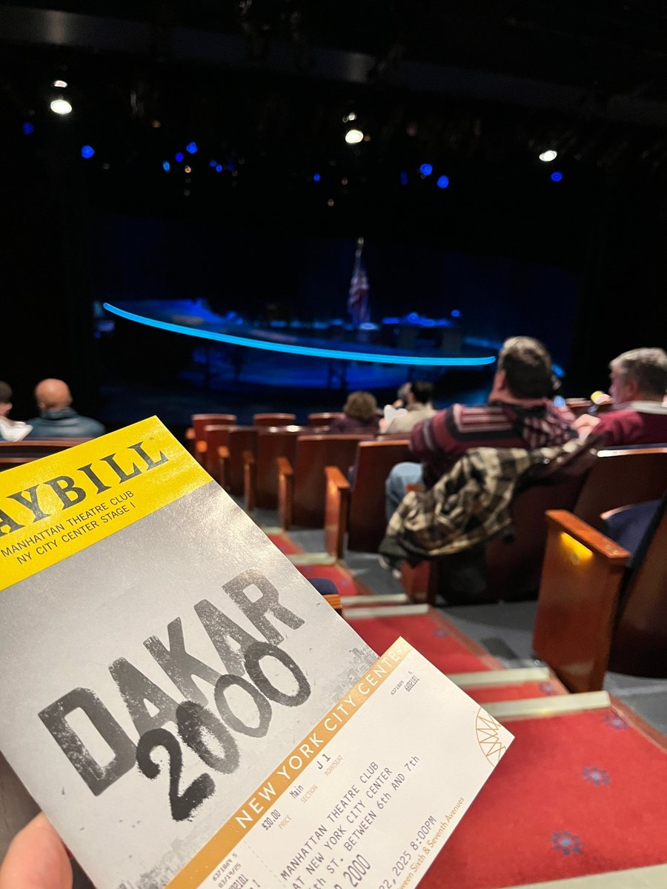
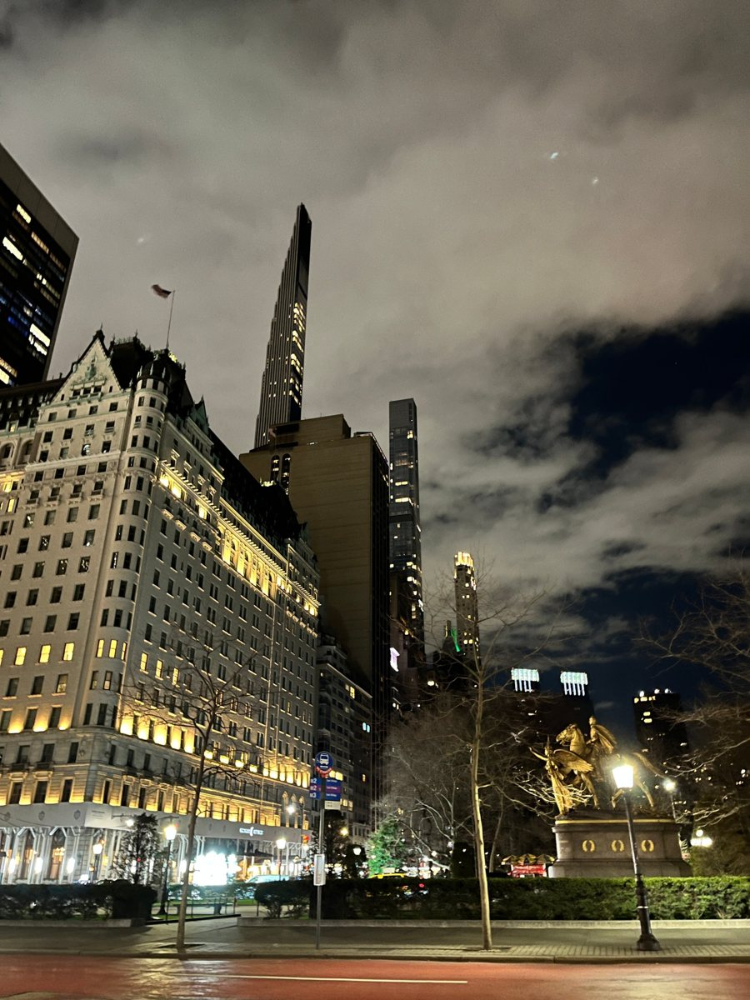

культура · театр · 22 марта 2025 · City Center

ряд J, место 1
22 марта 2025. Manhattan Theatre Club, New York City Center Stage I 🎭
Dakar 2000, новый триллер Раджива Джозефа. Сенегал, канун нового тысячелетия. Идеалист-волонтёр Корпуса мира разбивает грузовик, набитый «одолженными» вещами для деревенского огорода, а американский агент безопасности предлагает ему сделку: билет в один конец домой или миссия, чтобы всё исправить. Чем глубже он заходит, тем труднее сказать, что значит «правильно» 🌍

Плаза, после
Честно? Сюжет меня не захватил. Зато захватил Абубакр Али в роли Бубса 😄 Такое обаяние не сыграешь: тёплый, смешной, немного безрассудный, и веришь каждому его слову, даже когда понимаешь, что не стоит 🙈
Ряд J, место 1, $30, а после прогулка мимо Плазы под облачным мартовским небом 🌙
Dakar, 2000
Не каждый вечер должен менять жизнь. Иногда это просто хорошая компания, хороший актёр и ночной Нью-Йорк ✨
← культура